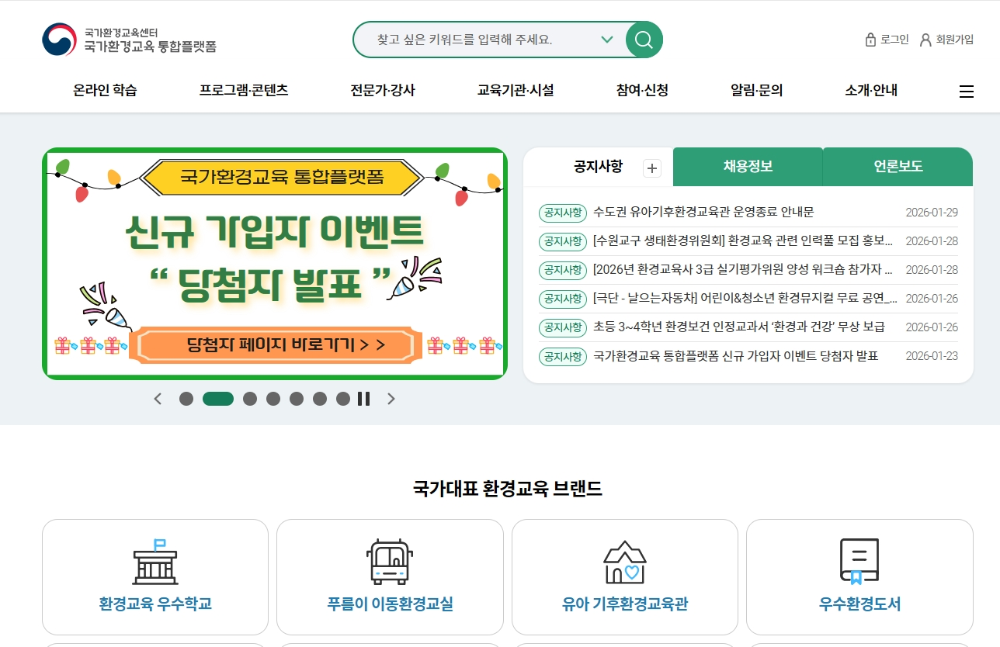
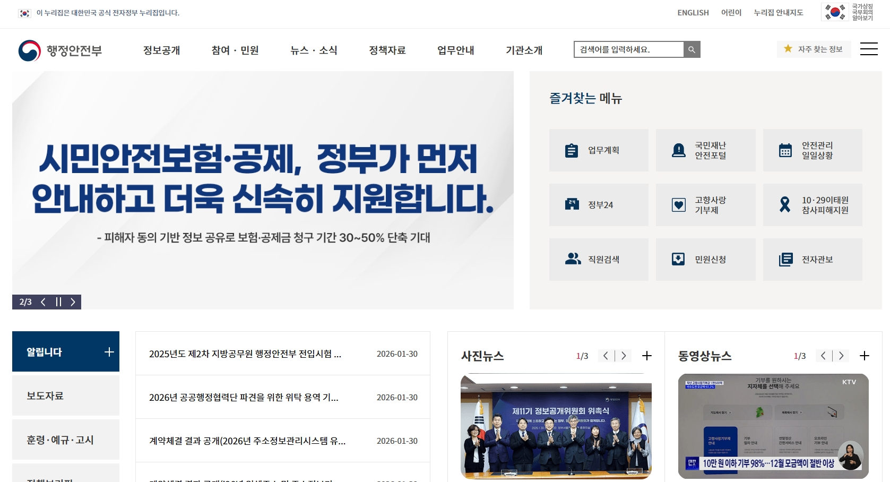

사용성 테스트 실적
실사용자 기반의 사용성 테스트 및 개선안을 제공한 프로젝트들의 실적입니다.
사용자가 제품을 실제로 사용하는 과정을 관찰하고 분석하여 직관성, 효율성, 만족도 등을 평가하고, 구체적인 개선 방안을 제시했습니다. .
UI/UX 사용성 테스트 포트폴리오
주요실적





실제 사용자를 통한 체계적인 사용성 평가 및 개선 실적
실사용자 기반의 사용성 테스트 및 개선안을 제공한 프로젝트들의 실적입니다.
사용자가 제품을 실제로 사용하는 과정을 관찰하고 분석하여 직관성, 효율성, 만족도 등을 평가하고, 구체적인 개선 방안을 제시했습니다. .
주요실적